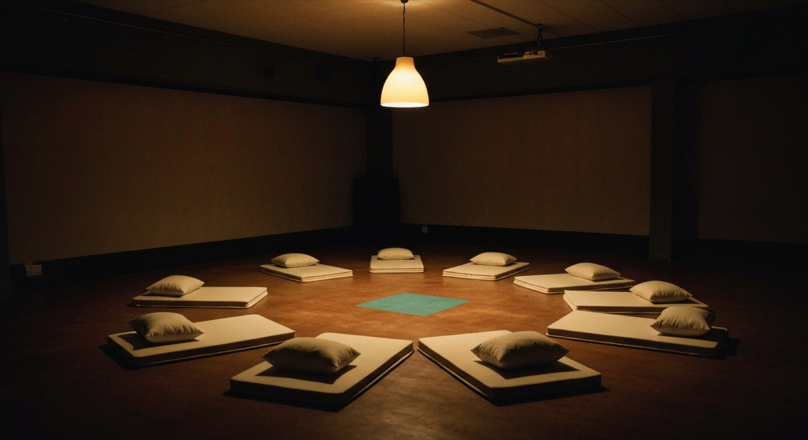

A label that records what happens in a room has to decide who is in it. That decision is the work.

Zariia releases compilations made from sessions: musicians invited into a room, and what comes out of it becomes the record. So there is nothing to select from. The record does not exist until the invitation is made, which means the invitation is the curating, and everything after it is editing.
This note sets down how those rooms are put together, and what is known about the ways they go wrong.
Zariia sits where three older forms meet. None of them is a metaphor.
Every curator decides what is shown and what is withheld. A Zariia record does both in the same object. The open track and the sealed channel are two registers running in parallel, and the relation between them is the editorial position — restated on every release.
Each release says which of those relations its sealed channel holds: the counter-voice, the room, the refusal, the reply, the score, or open throughout for a record with no sealed channel at all. These are classes, not scores. None of them outranks another, and no release is a better kind than another. A label that used the same one every time would just be running a format.
What is never published is a proportion. The two running times go out the way a sleeve has always printed them; a duration is metadata and nothing more, closer to a squad number than to a measurement of anything. A percentage does something else. It measures how much is being withheld, and that turns the withholding into a boast.
Alongside the sessions the label holds residencies: virtual, unpaid, a span of time and a frame rather than a place. They are for people who are not musicians, and they are preparation rather than a session — the room is still the room. What a residency is, what it gives and what it does not is set out on its own page.
The question sounds like it wants names. The research on how creative teams assemble says otherwise: what governs whether a scene forms at all is not who is picked but three proportions — how large each gathering is, how many are new, and how often the same people work together again. Below certain proportions you get isolated pockets indefinitely. Above them a scene coheres, quite suddenly.
And there is a limit in the other direction, which is the finding that ought to govern everything.
What follows for the first sessions: rooms of four to six, roughly half of them new each time, nobody in more than two of the first four, and one person deliberately included who does not fit. A room of people who already agree produces a record that already exists.
An invitation reaches only who you already know, and who you already know is shaped by caste, class, gender, language and institution. The literature on Hindustani music documents this directly: women's participation constrained by respectability and the fear of loss of honour; working-class participation constrained by the leisure time it requires; the gendered character of the gathering treated as a structural feature rather than an accident.
A private room does not escape that. It concentrates it.
An open call at least lets somebody select themselves in. An invitation cannot. Zariia's format makes the room more exclusive by design, which makes this worse rather than better, and there is no formal fix — no clever mechanism that solves it while keeping the invitation.
What is left is an obligation, and counting. Who was in the last four rooms, and who was not. Nothing about that gets published — a list of who is in a scene is the one object this project refuses to create — but it cannot be managed without being known.
Sources for the claims above: ethnography of Lahore's baithaks (Shair, HAU, 2025); Simmel's Sociology of Secrecy (1906) and Bellman's work on Kpelle Poro initiation; Guimerà et al. on team assembly (Science, 2005) and Uzzi & Spiro on the small-world parabola (AJS, 2005); Pedrini et al. on Bologna 1978–92; Moore et al., Fair Games — Curating New Music (2024); and the literature on gender, class and listening in Hindustani music. Full citations are kept with the working brief.